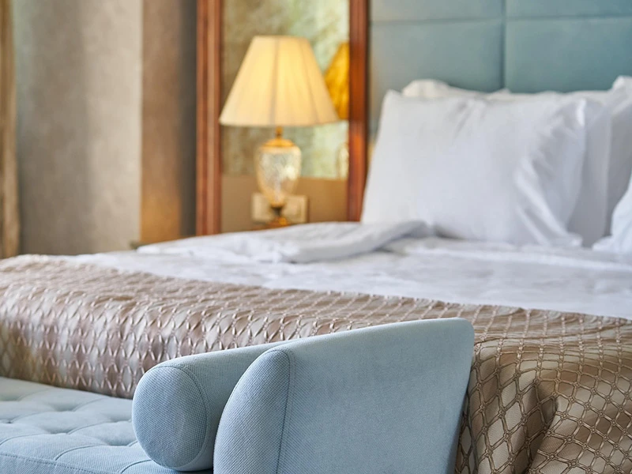
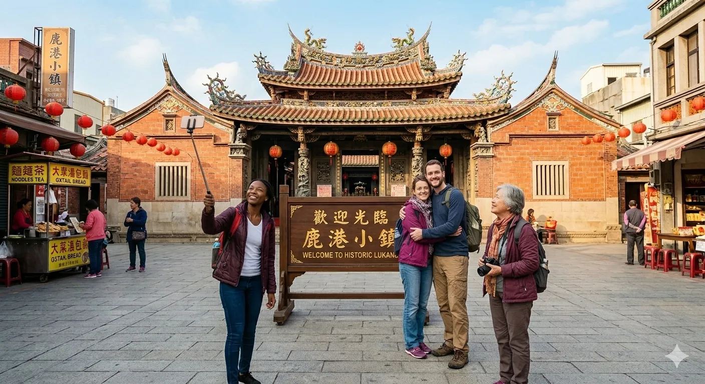
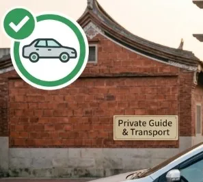

Lukang Taiwan Travel Guide Best Things to Do in Lukang

Lukang Old Street Taiwan
Lukang Old Street is most famous in Taiwan a historic district in Lukang with over 200 years of history.Once part of a busy Qing Dynasty trading port,it features red-brick houses,narrow winding lanes,preserving the charm of old Taiwan.

Lukang Temples in Taiwan
Lukang has variety of temples,making it a historic town rich in culture, traditional beliefs, and religious heritage, attracting visitors interested in,most famous like Tianhou Temple ,Longshan Temple,Wenwu Temple.All of them make you immerse in old age

Lukang local food Taiwan
Lukang is famous for its traditional Taiwanese food, including meat buns, vermicelli soup, and handmade local snacks. It is one of the best places to experience authentic Taiwanese street food.
🚄Transportation
How to get to Lukang ,Generally travel by myself take the Taiwan High Speed Rail(MRT) to Taichung and then transfer to a shuttle bus called "Taiwan Tourist Shuttle (Taichung to Lukang)", Taiwan Tourist Shuttle is a bus service specifically for tourists, while Chung-Lu Bus Traffic is a local bus service. This two way is the most economical method and common .Of course, if you want to save time and queues, you can take Uber at the station. The price not too expensive since the distance isn't too far. Notice there are no direct trains or MRTs to Lukang.
- Step 1: Airport MRT A12/A13 Station to A18 HSR Taoyuan Station (10 min)
- Step 2: Take High-speed rail to Taichung Station (1 hour)
- Step 3: Transfer to“Taiwan Tourist Shuttle-Lukang Route”or Chung-Lu Bus(50min),also can take Uber(35min)
🛎️Hotel and B&B
Where to stay in Lukang,If you arrive in Lukang, don't worry about accommodation. It's a famous Taiwanese tourist destination, just like Jiufen Old Street. Local international-level hotels like ⭐Yong Le, ⭐Joy Inn, and ⭐Euphoria are all excellent, so there's not much to compare. Of course, ⭐Airbnb is also a great option in Lukang, and many Airbnb mix local features, making them perfect for an Lukang immersive experience.

🕰️Best time to visit Lukang Taiwan
- Weekends I prefer to visit on holidays because there are more vendors on the streets, and you can feel the lively atmosphere. You might even catch a small parade (from other temples).
- Weekdays On ordinary days, you can feel the peace of this small town, old streets, and the few tourists. Sometimes, after living in the city for a long time, this quiet atmosphere , make you more deep in ,it feel good.

👨✈️ Explore Lukang with a Local Expert
Don't want to worry about bus schedules or getting lost? I offer personalized services to make your trip stress-free:
- ✅ Private Car Service: Door-to-door pickup from HSR stations or hotels and Airport.
- ✅ Local Tour Guide: Discover hidden spots and stories you won't find in books.
- ✅ Customized Itinerary: Food tours, temple walks, or handicraft experiences.
